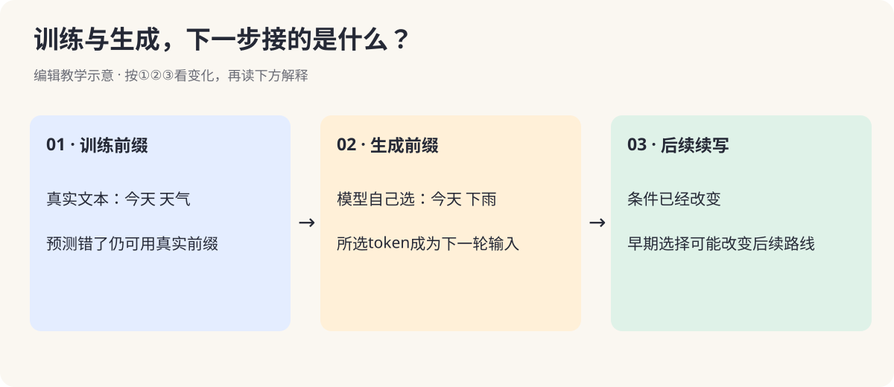
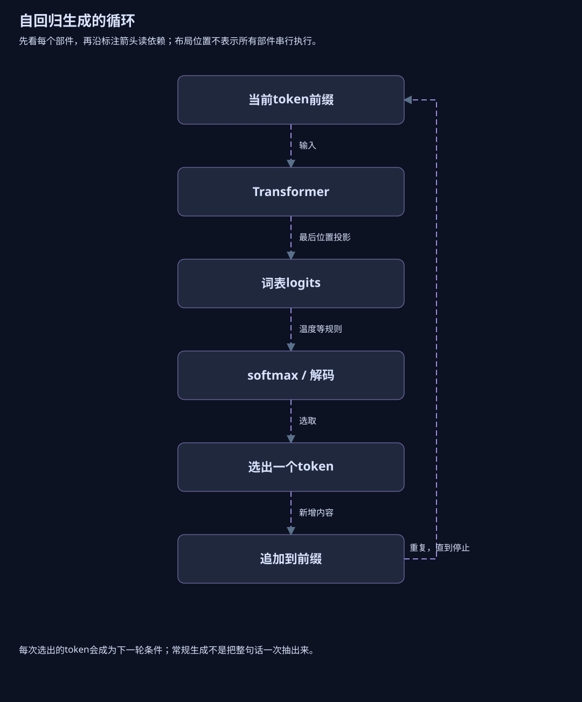

第7章 · 自回归生成与采样
本章开篇生活情境与衔接为编辑教学改写，借鉴原视频从经历引出概念的讲解方法，不是作者原话；原视频线索与论文见下方对应段落。
先看一件具体的事
第一句偏了，后面为什么越接越像另一回事？

训练与生成，下一步接的是什么？ · 点击可放大先看这个场景
想象你练一段演奏。每次弹错，老师都会先把下一句的正确起点放到你面前，所以你总能从正确的位置继续。到了正式演出，没有人替你复位，前面错了一拍，后面接到的节奏也变了。你练过很多正确片段，却不一定练过如何从自己的偏差里接下去。
问题出在哪里
这能帮助理解语言模型训练和生成之间的一处差异。常见训练方式把真实文本的前缀交给模型，让它预测下一个token。预测错了，下一个训练位置仍可以基于真实前缀计算。生成时却要把自己刚选出的token接回输入；一个早期选择，可能改变后面整条续写的条件。
模型怎样处理
我们把这种训练与推理前缀分布的差异叫暴露偏差。它不是说模型只要错一个字就一定崩溃，而是提醒你：练习时面对的历史，和真正运行时亲手制造的历史，未必一样。多步生成的错误不能只盯住最后一句，还要看前面怎样把路线带到了这里。
再看一个变化
那么，同一个开头为什么有时能写出不同答案？因为模型通常先给候选token一排分数，再变成概率，最后按解码规则选择。原视频举过70%、20%、10%的候选分布：第一个最可能，但只要采用抽样，其余选项仍然有机会出现。
放回完整流程
Temperature调的是概率的尖与平。低温让强者更占优势，高温让其他候选也多一些机会。它并没有给模型补充知识，也没有承诺把不靠谱的词变成好创意。选中的token一旦接回上下文，下一轮就站在新的起点上，所以改变一次选择，也可能带来很不一样的后续。
回到开头
把两件事接起来看：前缀决定现在在什么岔路口，采样决定从这里怎么选。想让回答可靠，不能只旋转温度旋钮，还要看输入证据、任务约束和验证。下面先固定分数只调温度，这样你能看清，究竟是哪一层发生了变化。
这一章怎么读先带着上面的问题往下看。每个概念先用白话接上情境，再给计算；遇到公式可以先看旁边的例子。动手实验和答案直接展开，论文留在相应概念后，想追根究底时再点开。
先动手试一试 → 7.1 带着问题进入模型
模型给出下一token的分数后，还要选择、接回上下文、继续预测。训练与生成的差异、温度的作用，都发生在这条链上。
先沿箭头看懂：自回归生成的循环

每次选出的token会成为下一轮条件；常规生成不是把整句话一次抽出来。7.2 暴露偏差：真前缀与自生成前缀
练习时老师给正确起点，演出时只能接自己的上一拍。下面把这件事写成条件概率：模型这次预测所依赖的前缀，究竟来自真实文本，还是来自它刚才的选择？
teacher forcing训练时，每个位置给定真实前缀去预测下一个token。生成时没有未来答案，只能将自己的输出接回上下文。某一步偏离后，后续面对的前缀分布可能与训练不同。
把刚才的直觉一步步算出来
teacher forcing训练时，每个位置给定真实前缀去预测下一个token。生成时没有未来答案，只能将自己的输出接回上下文。某一步偏离后，后续面对的前缀分布可能与训练不同。
这解释了一类误差累积风险，但并不意味着所有长回答错误都来自暴露偏差。Scheduled Sampling是历史上研究训练前缀差异的一条方法线，不能说它已普遍解决现代LLM问题。
整段序列的概率可按链式法则写成Πₜp(xₜ|x<ₜ)。逐token交叉熵正对应这些条件概率的负对数和；训练通常提供真前缀，生成时提供自生成前缀，因此干净前缀的单步指标不能完全代替整段rollout稳定性。
换你试一次：先猜，再算
训练目标句为“A B C”。训练预测C时前缀是“A B”；生成时第二个token错成D，预测第三个时前缀变成什么？
参考答案与计算结果
变成“A D”。模型必须在自己造成的上下文中继续生成，不能假设训练时的正确前缀仍在。
这个类比帮到哪里，停在哪里
暴露偏差、知识不足和事实幻觉有关但不同，需要分别设实验。
关联视频 · 已取得完整音轨并完成本机自动转写；本节综合转写与页面摘要改写，术语和个别片段尚未逐秒校对。
7.3 Temperature：改变下一token的采样分布
先把候选和分数固定。温度不负责写入新知识，只负责改变这些候选的概率分配。这样看下面的softmax，你能清楚区分模型给了什么分数，解码又怎样使用它。
模型输出logits后，temperature通过softmax(z/T)改变概率分布的尖锐程度，再从候选token中采样。
把刚才的直觉一步步算出来
先分清logit、概率与采样。logit可以是任意实数；softmax将它们变成和为1的概率；采样再按照概率抽一个结果。temperature通常在softmax前把logit除以T，因此改变的是分布形状。
固定logits=[3,2,1]，T=1时约[0.665,0.245,0.090]；T=0.5时约[0.867,0.117,0.016]；T=2时约[0.506,0.307,0.186]。模型知识和logits都未改变。
Top-k先保留k个候选，top-p按累计概率保留一组候选，再重新归一化。这些采样规则可以与温度组合，但组合顺序由实现规定。低温不保证真实；若最高分候选错了，它可能更稳定地选错。
换你试一次：先猜，再算
T=1时保留top-2候选，对原概率[0.665,0.245,0.090]重新归一化后是什么？
参考答案与计算结果
约[0.731,0.269,0]。截断改变支持集合，温度仅重塑未屏蔽候选间概率。
这个类比帮到哪里，停在哪里
温度不增加知识，也不保证更真实或更有创意。T=0通常由服务实现为贪心等特殊策略，不能直接代入除法公式。
关联视频 · 已取得完整音轨并完成本机自动转写；本节综合转写与页面摘要改写，术语和个别片段尚未逐秒校对。
动手看看：只改一个条件，会发生什么？
分数先保持不变，从低温调到高温。看概率条形图，而不是把变化直接叫作“更有创造力”。哪些候选获得了更多机会？模型有没有因此多读一份资料？
想亲手复现，就运行这段小实验
本例是编辑编写的教学计算，不是作者实验的代码复刻。先把 common.py 与本章脚本下载到同一个目录，再执行 python3 07_sampling.py。只使用Python标准库。
from common import softmax
for t in [.5,1.,2.]:
p=softmax([3,2,1],t)
print('T:',t,'p:',[round(x,6) for x in p])
p=softmax([3,2,1]); order=sorted(range(3),key=lambda i:-p[i])
kept=[]; total=0.
for i in order:
kept.append(i); total+=p[i]
if total>=.8: break
print('top-p=.8 retained IDs:',kept)
print('renormalized:',[round(p[i]/total,6) for i in kept])
实际运行输出
T: 0.5 p: [0.866813, 0.11731, 0.015876]
T: 1.0 p: [0.665241, 0.244728, 0.090031]
T: 2.0 p: [0.50648, 0.307196, 0.186324]
top-p=.8 retained IDs: [0, 1]
renormalized: [0.731059, 0.268941]
先不急着读完每一行代码。找到输入、这次改变的量和最后输出，按上面的例子预测一次，再运行核对。若结果和直觉不同，打印中间值，看看差异从哪一步开始。
回到开头，你能解释了吗？
训练给真实前缀、生成接自己的输出，差异出现在哪里？
温度调低后，一个错误但最高分的候选会自动变成正确答案吗？
用自己的话讲给一个没读过这一章的人听。能把问题、过程和结果接起来，再看公式就会容易一些。